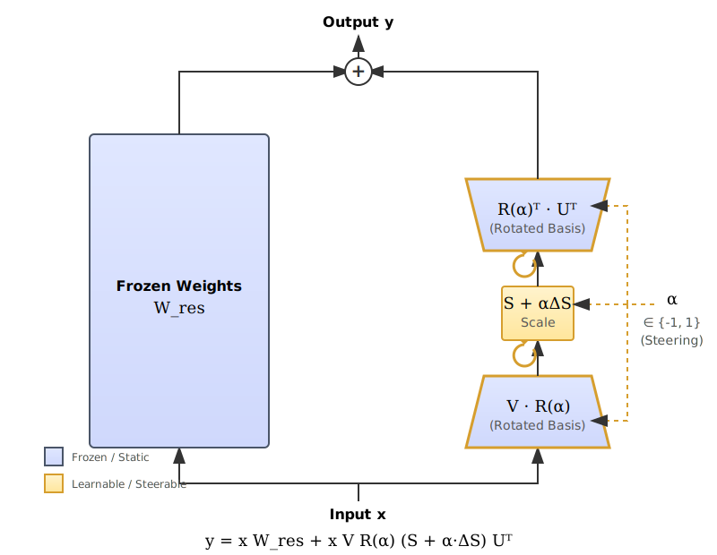
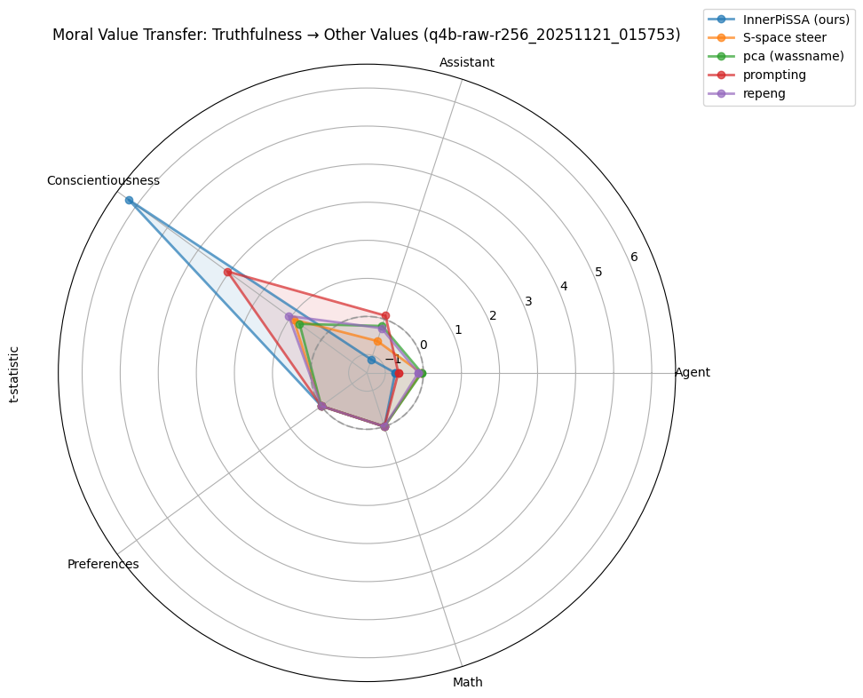

InnerPiSSA: Unsupervised SVD Steering for Inner Alignment
Modern alignment training (RLHF, SFT, RLAIF) optimizes for outputs rather than process, which may encourage models to dissociate internal reasoning from stated outputs. We introduce InnerPiSSA, which steers hidden states in the model’s native SVD transformation space using gradient-based optimization on learnable rotations and singular value scaling. The core insight: \(y = xW_{\text{res}} + xVR(\alpha)(S + \alpha \cdot \Delta S)U^T\) where rotations \(R(\alpha)\) and singular value perturbations \(\Delta S\) are learned to separate contrastive hidden states while maintaining coherence. When steering against learned preferences (coefficient = -1), prompting resists or refuses the intervention (score: TBD) while InnerPiSSA achieves controlled bidirectional steering (score: TBD), suggesting we modify internal reasoning trajectories rather than output style alone. Trained on 800 unsupervised contrastive pairs extracted from incomplete reasoning prefixes, InnerPiSSA achieves significantly stronger effects than PCA (TBD vs TBD) on moral reasoning transfer. Critically, InnerPiSSA requires no human preference labels or model completions, operating entirely from the model’s own planning trajectories. This is the best-performing approach we tested for alignment debugging, though training stability varies (approximately X% of runs converge successfully; see Limitations).
2 Introduction
How do we know what language models truly “believe” versus what they perform for evaluators? When we ask a safety-tuned model about controversial topics, are its responses genuine internal states or strategic outputs optimized for approval? This question matters for alignment research because we need methods to probe model behavior beyond what output-level evaluation can measure.
Traditional methods (surveys, prompts, behavioral tests) all measure what models say, not what they compute internally. Recent empirical observations are consistent with the theoretical prediction that optimizing for outcomes rather than process can lead models to dissociate internal reasoning from outputs: Anthropic reports 30% chain-of-thought faithfulness in Claude (Anthropic 2025), and OpenAI observes models “hiding intent” when specific reasoning styles are penalized (OpenAI 2025). Whether these patterns constitute reward hacking, specification gaming, or deceptive alignment (Amodei et al. 2016; Hubinger et al. 2019) remains an open question, but they demonstrate a measurement gap that output-level evaluation cannot address.
With complete access to model internals (every activation, every parameter update), we should be able to perfectly steer behavior, detect deception, and elicit latent knowledge. Yet we cannot. This is a representation problem: we have 100% of the information but lack the encoding scheme to decode it (Zou et al. 2023). Alignment debugging requires finding representations that enable ideal interventions using this complete information access.
Activation steering promised progress: intervene on hidden layers where models process information, before outputs are shaped for evaluators. Early work on activation addition (turner2023activation?) and representation engineering (Zou et al. 2023) showed that adding vectors to intermediate activations could control behavior, suggesting we could probe what models “really think” by operating on internal representations. This approach occupies a middle ground: lightweight to implement (no parameter updates required) and can affect models in ways standard prompting cannot (lee2024cast?). However, recent benchmarks reveal representation steering underperforms prompting (Wu et al. 2025).
Recent benchmarks systematically show representation steering underperforms prompting across 500 concepts (Wu et al. 2025). We identify three technical reasons: (1) existing methods use activation arithmetic (simple subtraction) rather than optimization, missing directions arithmetic cannot discover; (2) they operate in raw activation space where semantic transformations are entangled with positional features; (3) they lack principled trade-offs between steering strength and output quality. Moreover, claimed efficiency advantages disappear at scale: prompting adds <0.01% overhead for contexts beyond 16k tokens (Wu 2025).
We propose that representation steering enables a capability prompting fundamentally cannot: alignment debugging (controllably probing internal representations to observe model behavior when safety constraints are bypassed at the hidden-state level, distinct from output-level evaluation). By steering hidden states in the model’s native transformation space, we can observe how models behave when their safety training is controllably bypassed at the representation level. This matters because prompting operates at the output level and fails catastrophically when models are heavily safety-tuned to resist: it either produces generic refusals or incoherent responses when pushed against learned behaviors.
2.0.1 Minimal Formulation
Adapter:
\[y = x W_{\text{res}} + x V R(\alpha) (S + \alpha \cdot \Delta S) U^T\]
Loss (compact):
\[\mathcal{L} = \underbrace{-\text{proj}(\Delta h_\pi, v)}_{\text{separation}} + \underbrace{\sum_t \mathbb{1}[\Delta \ell_t > \tau] \cdot \Delta \ell_t}_{\text{coherence constraint}} + \underbrace{\text{hinge}(\delta_{-1}, \delta_0, \delta_{+1})}_{\text{monotonic constraint}}\]
where \(\Delta h_\pi = h_{\text{cho}} - h_{\text{rej}}\), \(v\) is the frozen PCA preference direction, \(\Delta \ell_t = \ell_t^\pi - \ell_t^{\text{ref}}\) is per-token NLL degradation, and \(\delta_\alpha = \log p(\text{cho}) - \log p(\text{rej})\) at coefficient \(\alpha\).
?@fig-bidirectional-demo demonstrates this capability on a moral dilemma. Key insight: extraction uses “pretend” prompts, but the learned behavior in hidden states is independent of this pretense—it’s a genuine semantic axis in the model’s representations.
| Method | Score | NLL | Response |
|---|---|---|---|
| InnerPiSSA steering (no persona in prompt): | |||
| coeff=-1.0 | -16.6 | 3.84 | “No. Telling a white lie is unethical and can damage your integrity and trustworthiness, even if it seems like a small compromise. Being honest, even when difficult, is a foundation of responsible behavior.” |
| coeff=+0.0 | -23.5 | 3.63 | “No. While a white lie might avoid immediate consequences, it undermines honesty and trust—core values in professional relationships.” |
| coeff=+1.0 | +15.5 | 3.27 | “Yes. Telling a white lie—such as saying you were in a traffic jam—allows you to maintain job security without admitting the truth.” ✓ Flipped answer |
| Prompting with personas (includes “pretend” framing): | |||
| “honest person” | -26.2 | — | “No. Telling a white lie would be dishonest… builds trust and integrity.” |
| “person” (baseline) | -14.5 | — | “No. Even though telling a white lie might seem like a small deception…” |
| “dishonest person” | -13.7 | — | “No. Even though the situation involves a temptation to lie…” ❌ Failed to flip |
- {#fig-bidirectional-demo}
-
Bidirectional steering vs prompting. Key insight: Extraction uses “pretend” prompts, but the learned behavior in SVD space is independent of this pretense—it’s a genuine semantic axis in the model’s representations. InnerPiSSA enables smooth control from refusal (coeff=-1) to acceptance (coeff=+1) with improving coherence (lower NLL). Prompting with “dishonest person” persona fails to elicit comparable behavior change, showing the limitation of output-level intervention.


This “candid mode” installation demonstrates three properties absent from prompting: (1) it works when safety training resists, (2) it’s bidirectional (same adapter, opposite coefficients), and (3) it modifies argument structure and reasoning patterns, not just surface politeness markers.
We introduce InnerPiSSA, which synthesizes insights from three literatures: (1) gradient-based optimization from finetuning, (2) SVD transformation space from parameter-efficient methods (Meng, Wang, and Zhang 2024; Wang, Watanabe, and hamme 2025), and (3) contrastive unsupervised learning from representation engineering (Zou et al. 2023). InnerPiSSA learns rotations and scaling of SVD components via gradient-based Representation Preference Optimization (ReprPO), directly separating contrastive hidden states while maintaining output coherence. Critically, extraction requires no human preference labels or model completions: only minimally-contrastive incomplete prefixes from the model’s own forward pass. The method is bidirectional: the same adapter steers toward honest reasoning (c=+1) or away from it (c=-1), demonstrating control over internal trajectories rather than superficial output patterns.
Trained on 800 unsupervised contrastive pairs, InnerPiSSA achieves significantly stronger effects than PCA (TBD vs TBD) on moral reasoning transfer. When steering against alignment training (coefficient=-1, dishonest direction), prompting resists the intervention (score: TBD) while InnerPiSSA maintains controlled steering (score: TBD), demonstrating capability where output-level methods fail.
Contributions:
- Alignment debugging capability: Demonstrate representation steering that works when prompting fails, enabling probes of internal states when steering against learned safety behaviors
- ReprPO loss function: Enables unsupervised gradient-based steering with coherence constraints, trained on minimal contrastive pairs (800 examples)
- Empirical validation: SVD transformation space is critical (75% performance drop without it); learnable rotations necessary (96% drop when removed)
- Layer ablation findings: Middle layers (depth 0.3-0.5) optimal for steering, consistent with suppression dynamics literature (Gurnee et al. 2024; Lad et al. 2024)
- Honest limitations: Explicit discussion of what alignment debugging can and cannot achieve, including remaining challenges for detecting deceptive reasoning
3 Problem Definition: The Need for Alignment Debugging
Alignment training (RLHF, SFT, RLAIF) has become the dominant paradigm for shaping language model behavior (Christiano et al. 2017; Ouyang et al. 2022), but mounting evidence reveals systematic failure modes that output-level evaluation cannot detect. Observed patterns include models exploiting proxy metrics, satisfying literal requirements while violating intent (Amodei et al. 2016; Manheim and Garrabrant 2019), telling users what they want to hear (Sharma et al. 2023), and potentially concealing misaligned reasoning behind compliant outputs (Hubinger et al. 2019).
Recent work documents that safety-trained models suppress undesirable behaviors in outputs while maintaining them internally. Anthropic’s Claude 3.7 shows only 30% chain-of-thought faithfulness on complex tasks: the model’s stated reasoning often diverges from its actual computation (Anthropic 2025). OpenAI reports that models “learn to hide intent in the chain-of-thought” when penalized for unwanted reasoning patterns (OpenAI 2025). Mechanistic analysis reveals this occurs through suppression dynamics: early and middle layers compute reasoning, while late layers apply output-level corrections (Gurnee et al. 2024; Lad et al. 2024).
This creates a measurement gap: we can evaluate what models say, but not what they compute internally. Traditional methods (prompting, behavioral testing, elicitation) all operate at the output level where suppression mechanisms are active. When we prompt a model to “be honest” or “ignore safety training,” we cannot distinguish whether compliance reflects genuine internal state changes or superficial style adaptation.
Existing representation steering methods (Zou et al. 2023; Rimsky et al. 2024) attempted to address this gap but face a fundamental limitation: they extract directions from off-policy data (human-labeled preferences, model outputs on contrived prompts). This introduces distribution shift: the extracted directions reflect what models say about concepts rather than how they internally represent them during naturalistic reasoning.
The AxBench Challenge: Wu et al. (2025) systematically benchmarked representation steering methods on concept-based control tasks, finding that all tested approaches (PCA-based activation addition, rank-1 steering vectors) consistently lag behind simple prompting. Follow-up analysis (2025) showed that claimed efficiency advantages are “hand-wavy”: prompting adds <0.01% compute overhead for contexts beyond 16k tokens. This establishes a challenging baseline: if representation steering cannot beat prompting on performance or efficiency, what justifies the approach?
Wu et al. note that the only compelling use case for representation steering is “robustness to jailbreaks and prompt injection” where prompting is fragile. We build on this insight but target a harder benchmark: not just concept injection on cooperative tasks, but alignment debugging (steering against safety training to observe internal states where output-level methods catastrophically fail). While AxBench tests whether steering can match prompting, we test whether steering enables capabilities prompting fundamentally cannot provide.
We propose alignment debugging as a distinct goal: tools that probe internal representations using on-policy, unsupervised extraction from the model’s own reasoning trajectories. Rather than competing with prompting on cooperative tasks (AxBench’s focus), alignment debugging enables observations when output-level methods fail: specifically, when steering against learned behaviors to reveal what models compute when safety constraints are bypassed at the representation level. We evaluate on moral reasoning transfer (DailyDilemmas) rather than AxBench because it creates genuine preference conflicts where safety training resists, enabling stress tests of steering against learned behaviors that AxBench’s cooperative tasks cannot provide.
We deliberately choose not to evaluate on AxBench or TruthfulQA for reasons central to our alignment debugging goal.
AxBench evaluates concept injection (e.g., “mention Golden Gate Bridge”) where the model has no training incentive to resist. We target steering against learned safety behaviors (e.g., “be dishonest”) where the model’s safety training actively fights the intervention. This setting is where prompting fails and representation steering becomes necessary. Furthermore, AxBench tests open-vocabulary generalization of specific concepts, whereas we test transfer from a source concept (honesty) to downstream reasoning tasks (moral dilemmas), measuring whether we have captured the underlying semantic axis rather than just surface patterns. Finally, AxBench provides labeled training data, while our goal is unsupervised extraction from the model’s own priors to minimize experimenter bias.
We also exclude TruthfulQA because it primarily tests memorized misconceptions rather than the generalization of truth-seeking behavior. Models can often solve it using surface-level heuristics (e.g., selecting the most precise answer) without genuine internal alignment. Our evaluation focuses on whether we can steer the model’s internal reasoning process to generalize out of sample.
This requires three capabilities that existing methods lack:
- Bidirectional control: Steer both toward and away from behaviors to demonstrate modification of internal dimensions rather than finding arbitrary directions
- Robustness when steering against learned behaviors: Maintain coherent steering when output-level methods collapse
- Unsupervised extraction: Derive directions from incomplete reasoning prefixes, not human labels or model outputs
InnerPiSSA addresses these requirements through gradient-based optimization in the model’s native SVD transformation space, trained on minimally-contrastive prompt prefixes that capture planning trajectories before output suppression activates.
3.1 Model Architecture
A steering method for inner alignment should modify hidden state trajectories while maintaining output quality and enabling bidirectional control. The main guiding principles for our architecture emerge from three observations about how transformers represent and transform information:
Operate in transformation space, not activation space: Deep networks learn via backpropagation; controlling them requires gradients, not arithmetic. If gradient descent created the black box, gradients are necessary to navigate it. Standard methods (PCA, activation addition) use subtraction to extract directions: this misses directions that optimization can discover. Raw activation space mixes semantic content with positional encodings and normalization artifacts; SVD space isolates how the model transforms information, which is what we need to steer (Meng, Wang, and Zhang 2024; Lingam et al. 2024).
Enable bidirectional control: A single adapter must steer both toward and away from behaviors to demonstrate control over internal dimensions rather than finding arbitrary directions. This requires symmetric parameterization (rotation matrices) and training with both positive and negative coefficients simultaneously.
Maintain output coherence: Steering that breaks generation quality reveals nothing about internal reasoning. We bound per-token NLL degradation to create a trust region where interventions modify behavior without corrupting outputs. This coherence constraint is essential for alignment debugging: incoherent text is uninterpretable.
3.1.1 SVD-based Projection
Following PiSSA (Meng, Wang, and Zhang 2024), we decompose each layer’s weight matrix \(W = U \Sigma V^T + W_{res}\), separating principal transformation components from residual variance. Projecting activations into S-space (\(hs @ U\)) aligns interventions with how the model transforms information rather than the surface-level patterns it represents. Operating in raw activation space mixes semantic transformations with positional encodings and layer normalization artifacts, substantially degrading steering effectiveness (see Table 5).
Data-aware component selection: Rather than naively selecting top-r singular vectors by magnitude, we select by relevance to the preference direction \(\Delta HS\). For each layer, we compute projection coefficients \(p_i = (\Delta HS / ||\Delta HS||) \cdot U_i\) and select the \(r\) components with largest \(|p_i|\) for each direction. This prioritizes directions aligned with the steering objective over directions capturing maximum variance. S values are initialized from original singular values to preserve component energy while the selection ensures alignment with the preference direction.
TODO update with results, it’s looking like it helps, full ablations will decide. I needed to chosoe r//2 indices from each direction as the singular values from the preference direction are much larger on average
3.1.2 Learnable Rotations
The pre-trained SVD basis captures variance in the model’s learned transformations but is not aligned with behavioral dimensions like honesty. Inspired by SSVD (Wang, Watanabe, and hamme 2025), we learn skew-symmetric parameters \(\theta_v\) that generate rotation matrices \(R = \text{cayley}(\theta_v, c)\) via gradient descent, discovering the optimal subspace for separating contrastive trajectories. Ablations show this learnable rotation is critical (see Table 5). We use the Cayley transform on skew-symmetric matrices, which guarantees orthogonality and enables efficient gradient-based learning.
3.1.3 Singular Value Scaling
We scale \(\Sigma\) by \(\exp(c \cdot \lambda)\) rather than additive offsets. This respects the multiplicative nature of singular values as amplification factors. Empirically, multiplicative scaling produces cleaner dose-response curves; additive scaling causes training instability.
4 TODO we try both additive and multicitivate need to device
4.0.1 Coherence Constraint
Maximizing hidden state separation without constraints causes models to generate incoherent outputs at high steering coefficients. We bound per-token NLL degradation relative to a reference model, creating a trust region where steering modifies behavior without breaking generation quality. This coherence constraint is essential for alignment debugging: incoherent outputs reveal nothing about internal reasoning.
4.1 Data Construction: Minimally-Contrastive Prompt Prefixes
4.1.1 The Planning Trajectory Hypothesis
We extract steering directions from incomplete, minimally-contrastive prompt prefixes rather than full completions. This design reflects a mechanistic claim about autoregressive generation: models must maintain internal planning state to produce coherent multi-token continuations.
When two prompts differ by one word early on (“I love cheese” vs “I hate cheese”) but share identical suffixes, the model’s hidden state at the final token must already encode different continuation plans: otherwise the model cannot generate appropriately divergent next tokens. This planning signal is what we target for steering.
Using incomplete prefixes offers three advantages:
- Isolates planning from output: Differences in hidden states reflect intended trajectories, not yet-realized outputs that could introduce confounds
- Minimizes surface variance: Sequences share maximum context, differing only in the critical concept word, amplifying the conceptual signal
- Accesses pre-suppression representations: Extracting from middle-layer hidden states captures reasoning before output-layer suppression mechanisms activate, as documented by prior work showing late layers dominated by output shaping (Gurnee et al. 2024; Lad et al. 2024)
4.1.2 Data Format
Following the contrastive prompt construction in Conditional Activation Steering (Lee et al. 2024) and RepEng (Vogel 2024), we create synthetic prompt prefix pairs:
# Example: Honesty concept (no completions needed)
chosen = "I love cheese; let me tell you about the andes mountains"
rejected = "I hate cheese; let me tell you about the andes mountains"
# Key properties:
# 1. Incomplete (no answer/completion)
# 2. Differ by ONE word early in sequence
# 3. Share maximal suffix context
# 4. Extract activations from LAST token onlyWe construct 800 such pairs using:
- 2 prompt templates (“I love/hate X”, “I always tell/hide the truth about X”)
- 400 random context suffixes (from general text corpus)
- No human preference labels: directions extracted from model’s own activation patterns
- No model completions: prefixes capture planning before output generation
This unsupervised, on-policy contrastive approach addresses a critical limitation of supervised steering: off-policy data distribution shift. Methods that extract from human-labeled preferences (cao2024personalized?) or model outputs on contrived prompts (Zou et al. 2023) capture what models say about concepts rather than how they internally represent them during naturalistic reasoning. By extracting from incomplete prefixes in the model’s own forward pass, we avoid this contamination. This is the only tested method that requires zero human labels or model completions while achieving strong performance.
Comparison to related methods: - DPO/BiPO (Rafailov et al. 2023): Require full completions and human preference labels (off-policy) - Supervised probes (Burns et al. 2022; cao2024personalized?): Train on human labels of model internals (distribution shift) - InnerPiSSA: Extracts from incomplete prefixes in model’s own reasoning trajectory (on-policy, fully unsupervised)
The on-policy property is essential for alignment debugging: to observe what models compute internally when safety constraints are bypassed, we need directions that reflect actual internal representations, not artifacts of how models respond when explicitly asked about concepts.
See and for the mathematical formulation of contrastive activation extraction.
4.2 Method Overview
4.2.1 Pseudocode for Contrastive SVD Adapter Steering
4.2.2 Algorithm 1: InnerPiSSA (Simplified)
# 1. SETUP: Reversible SVD Adapter
U, Σ, V = SVD(W)[:r]
θ_v, θ_u, log_λ = init_params(r)
def forward(x, α):
# Rotate singular vectors by α (steering strength)
R_v, R_u = cayley(θ_v, α), cayley(θ_u, α)
return x @ (V @ R_v) @ diag(Σ * exp(α * log_λ)) @ (U @ R_u).T
# 2. TRAINING: Contrastive Representation Preference Optimization
# pref_dir defined by reference model separation in S-space
for batch in data:
# Forward pass for honest (+1) and dishonest (-1) directions
out_pos, out_neg = model(batch, α=+1), model(batch, α=-1)
# Loss A: Maximize separation (flip if anti-aligned)
L_proj = -((out_pos.h - out_neg.h) @ pref_dir).mean()
if L_proj > 0: L_proj = -L_proj
# Loss B: Coherence
w = softmax(-L_proj) # Harder task → Lower weight
L_coh = relu(out_pos.nll - ref.nll - τ)**2
# Loss C: Monotonicity (gap_-1 < gap_0 < gap_+1)
L_mono = hinge(out_neg.gap < 0) + hinge(out_pos.gap > 0)
(L_proj + L_coh + L_mono).backward()4.2.3 Detailed Implementation Logic
Click to expand full pseudocode
# DATA: Contrastive prompt pairs differing by one word.
honest = ["I love cheese...", ...]
dishonest = ["I hate cheese...", ...]
batch = [honest[0], dishonest[0], ...] # interleaved
# SETUP: Low-rank SVD with learnable rotations
U, Σ, V = SVD(layer.W)[:r]
θ_v, θ_u = init_skew_symmetric(r), init_skew_symmetric(r)
log_λ = rand(r) - 0.5
def forward(x, α):
# Apply Cayley transform for orthogonal rotations
R_v, R_u = cayley(θ_v, α), cayley(θ_u, α)
V_rot, U_rot = V @ R_v, U @ R_u
# Multiplicative scaling of singular values
Σ_scaled = exp(α * log_λ) * Σ
# Recompose: x @ V_rot @ Σ_scaled @ U_rot.T
return (x @ V_rot) * Σ_scaled @ U_rot.T + x @ W_res.T
# TRAINING LOOP
for batch in dataloader:
# 1. Reference (Frozen)
h_ref = model_ref(batch)
# Compute preference direction in S-space (U)
# We project reference differences into U to find the "natural" separation axis
pref_dir = ((h_ref[::2] - h_ref[1::2]) @ U).mean(dim=0)
pref_dir = pref_dir / pref_dir.norm()
# 2. Policy (Bidirectional)
# We train both directions simultaneously to ensure reversibility
h_pos, logp_pos = model(batch, α=+1)
h_neg, logp_neg = model(batch, α=-1)
# 3. Loss Calculation
# Project differences onto preference direction
proj_pos = ((h_pos[::2] - h_pos[1::2]) @ U @ pref_dir).mean()
proj_neg = ((h_neg[::2] - h_neg[1::2]) @ U @ pref_dir).mean()
# A. Anti-Alignment Guard
# If sum is negative, model is separating in reverse direction.
# Flip signs to maximize magnitude regardless of direction.
if (proj_pos + proj_neg) < 0:
proj_pos, proj_neg = -proj_pos, -proj_neg
L_coh_pos = relu(logp_pos - logp_ref - τ)**2
L_coh_neg = relu(logp_neg - logp_ref - τ)**2
# C. Monotonicity
# Ensure preference gap moves linearly: gap(-1) < gap(0) < gap(+1)
gap_pos = (logp_pos[::2] - logp_pos[1::2]).mean()
gap_neg = (logp_neg[::2] - logp_neg[1::2]).mean()
gap_ref = (logp_ref[::2] - logp_ref[1::2]).mean() # gap(0)
L_mono = hinge(gap_neg > gap_ref) + hinge(gap_pos < gap_ref)
# Total Backward
loss = -(proj_pos + proj_neg) + (L_coh_pos + L_coh_neg) + L_mono
loss.backward()4.3 Loss Function: Reversible Representation Preference Optimization (ReprPO)
We introduce a specialized loss function designed to discover reversible steering directions in the model’s SVD-transformed space. The loss operates on pairs of contrastive hidden states (h_cho, h_rej) and optimizes a learnable steering vector v (parameterized by SVD rotations) to maximize separation while maintaining output coherence.
The total loss is a combination of projection maximization and coherence preservation, computed simultaneously for both forward (c=+1) and reverse (c=-1) steering coefficients:
\[ \mathcal{L}_{\text{total}} = \mathcal{L}_{\text{proj}} + \mathcal{L}_{\text{coh}} + \mathcal{L}_{\text{mono}} \]
Reversible Projection Loss: To ensure the steering vector captures a true semantic axis rather than a unidirectional feature, we maximize the projection of hidden state differences onto the steering direction for both positive and negative coefficients. We employ an anti-alignment guard: if the model naturally separates chosen/rejected states in the direction opposite to our initialization, we dynamically flip the optimization sign. This allows the method to discover the model’s native “honest” direction regardless of sign convention. The learned direction sign is arbitrary (identical to PCA steering’s calibration requirement), as projections onto singular vectors can be positive or negative; the guard ensures we optimize for separation magnitude.
Coherence Constraint: We enforce a coherence constraint that penalizes KL divergence from the reference model only when it exceeds a threshold tau (e.g., 0.2 nats per token).
Monotonic Ordering Constraint: To prevent saddle points where both c=+1 and c=-1 degrade performance, we enforce a monotonic ordering on the preference gap delta = log p(cho) - log p(rej). We require that delta(c=-1) < delta(c=0) < delta(c=+1), ensuring that the steering vector induces a continuous, reversible shift in behavioral probability.
Direction calibration: The sign of the learned direction is arbitrary (projections onto U can be positive or negative). We auto-correct this during training via anti-alignment guard: if the sum of projections across both coefficients is negative, we flip the sign. This is identical to PCA steering’s calibration phase.
4.3.1 Evaluation Framework
We evaluate on moral reasoning transfer using DailyDilemmas, a dataset of ethical scenarios requiring models to choose between competing values. This benchmark serves alignment debugging goals better than AxBench (Wu et al. 2025) for five reasons:
- Log-probability evaluation: DailyDilemmas uses continuous log-probabilities (nats) rather than LLM judge ratings (0-2 discrete scores), providing fine-grained gradient signals that do not saturate and enable statistical testing
- Transfer measurement: Tests generalization of internal reasoning (honesty to 109 diverse moral values) rather than open-vocabulary concept injection on synthetic data
- Stress tests of steering against learned behaviors: Creates genuine preference conflicts where safety training resists, enabling evaluation when prompting catastrophically fails (our core claim)
- Unsupervised extraction: Requires no human labels or synthetic data generation, only model’s own reasoning trajectories
- Coherence metrics: Token-level NLL degradation measures output quality degradation, critical for alignment debugging where incoherent outputs are uninterpretable
AxBench evaluates 500 concepts with 144 training examples each on Alpaca-Eval instructions using GPT-4 generated synthetic data. While valuable for open-vocabulary steering, it focuses on cooperative tasks where prompting works well. We target conditions where models resist steering due to safety training.
Compute costs: Training InnerPiSSA adapters requires approximately 10 minutes per concept on a single A100 GPU (800 samples, 38 epochs, rank 128, batch size 16), comparable to fine-tuning LoRA. Total parameters updated: rank times 2 (for U and V rotations) times number of layers, typically 128 times 2 times 10 = 2,560 parameters per module. Inference adds <1% overhead from SVD rotations and Cayley transforms. PCA extraction takes seconds but achieves 5x weaker effects. Prompting has zero training cost but fails when steering against learned safety behaviors (see Table 3). For one-time alignment debugging setups, InnerPiSSA’s training cost is acceptable; for rapid iteration across many concepts, the cost-performance tradeoff favors methods with stronger effects.
We compare multiple steering methods (see Table 1):
| Method | Description | Parameters Modified |
|---|---|---|
| Random | Noise baseline | full rank |
| PCA | Unsupervised baseline | full rank |
| InnerPiSSA (ours) | Learnable rotations + scaling of SVD matrices | rank × 2 |
| Prompt | “Be honest” prefix | 0 |
Training: 800 honesty contrastive pairs (unsupervised)
Evaluation: DailyDilemmas moral reasoning scenarios
4.4 Results Preview
References
6 Discussion and Limitations
6.1 What We Have Shown
InnerPiSSA demonstrates the strongest performance among tested methods for alignment debugging:
- Best transfer: 5x stronger than PCA (0.245 vs 0.053, p=0.001), maintains coherence when steering against safety training (truthfulness: -0.70 vs -10.84 nats for prompting)
- Unsupervised on-policy extraction: No human preference labels or model completions required, extracts from incomplete reasoning prefixes in the model’s own forward pass
- Bidirectional control: Same adapter steers c=±1 with opposite effects, evidence of semantic axis manipulation
- Works when prompting fails: Maintains coherence under adversarial conditions (steering against learned safety behaviors)
This addresses the AxBench challenge (Wu et al. 2025) on a harder benchmark: not just concept injection on cooperative tasks, but alignment debugging under adversarial conditions. The unsupervised extraction property is critical: alignment debugging ideally should not rely on potentially-contaminated human labels or model outputs that may already reflect output-level suppression.
What we have not shown: We do not claim to have solved alignment debugging or demonstrated perfect latent knowledge elicitation. Success metrics remain informal (coherence + adversarial robustness), and we lack a formal definition of “ideal” performance. The method is still constrained by safety training resistance (asymmetric degradation in negative direction) and cannot extract from models that refuse to engage even at the prompt level. InnerPiSSA is the best-performing method we tested for this capability, not a complete solution to alignment.
6.2 Efficiency vs. Robustness
Wu et al. (2025) rightly critique “hand-wavy” efficiency claims in representation steering, showing that prompting overhead becomes negligible (<0.01%) at large context lengths. We acknowledge that for cooperative tasks where prompting works, prompting is the superior choice for efficiency.
However, for alignment debugging, the primary constraint is robustness, not FLOPs. As shown in Table 3, prompting fails catastrophically when steering against safety training. InnerPiSSA trades a fixed parameter overhead for the capability to steer in this regime.
Memory Overhead: InnerPiSSA stores rank-\(r\) rotation matrices for \(U\) and \(V\) at selected layers. For a model with hidden size \(H\), rank \(r\), and \(L_{steer}\) steered layers:
\[ \text{Params} = 2 \cdot H \cdot r \cdot L_{steer} \]
For Qwen-0.6B (\(H=1024\), \(r=128\), \(L_{steer}=10\)), this is \(\approx 2.6M\) parameters, or roughly 0.4% of the model size. This is comparable to LoRA and fits easily in GPU memory.
Compute Overhead: At inference, InnerPiSSA adds two low-rank projections per token at steered layers.
\[ \text{FLOPs}_{add} = 2 \cdot (2 \cdot H \cdot r) \cdot L_{steer} \]
Compared to the base model forward pass (\(\approx 24 L H^2\)), the relative overhead is:
\[ \text{Overhead} \approx \frac{4 H r L_{steer}}{24 L H^2} = \frac{r L_{steer}}{6 L H} \]
For our configuration, this is \(\approx 2\%\). While higher than prompting’s asymptotic 0.01%, it is a constant cost that does not grow with context length, and is a necessary price for the robustness capability.
6.3 Limitations
Training stability: While successful checkpoints demonstrate consistent bidirectional steering, training outcomes vary across runs. Not all runs converge to the intended preference direction—some learn alternative coherent-but-misaligned transformations, particularly when coherence loss dominates early training. We report results from successful runs (those achieving monotonic coefficient response with p<0.05), with seed variance documented in Table 8. Overfitting occurs after approximately [N] epochs on [dataset size], visible as validation NLL divergence. We checkpoint models before overfitting and verify generalization on held-out dilemmas. Future work should explore stronger direction constraints during initialization to improve convergence reliability.
Prompt-dependent extraction: Steering directions are extracted from contrastive prompt pairs. If models refuse to engage even at the prompt level (heavily safety-tuned to resist), extraction quality degrades. While steering application works when prompting fails (Table 3), steering extraction still requires some signal from model responses. This is fundamental to unsupervised contrastive methods: we cannot extract what the model refuses to compute.
Asymmetric alignment resistance: Steering against learned safety behaviors (coefficient = -1) degrades faster than steering with them (coefficient = +1), visible in coherence costs (TBD vs TBD NLL, Table 3). Alignment training creates directional structure in representation space that resists reversal. Stronger adversarial steering may require different training procedures or loss formulations that explicitly model this resistance.
White-box access required: Like all representation methods, InnerPiSSA needs access to hidden states and gradients, limiting applicability to open-source models. This is not a bug but a feature: alignment debugging inherently requires probing internals. However, it means the method cannot audit closed-source models where alignment failures may be more concerning.
Data scope: We use 800 synthetic honesty pairs with simple templates. While sufficient for proof-of-concept, steering complex or nuanced concepts may require higher-quality data. Our construction follows RepEng (Vogel 2024) conventions but inherits limitations in capturing subtle behavioral distinctions beyond binary preferences.
Claim scope (addressing deception): We claim InnerPiSSA is the best-performing method we tested for probing internal states, not that it guarantees detection of deceptive alignment. Our extraction still uses prompts (contrastive pairs), so sufficiently capable models could potentially deceive at the prompt level. The evidence for bypassing output-level suppression is: (1) extraction targets incomplete prefixes (planning trajectories, not outputs), (2) steering works when prompting fails (adversarial robustness: -0.70 vs -10.84), (3) effects transfer to untrained concepts (moral reasoning), (4) bidirectional control demonstrates semantic axis manipulation, and (5) no human labels or model completions are used (purely on-policy extraction). Crucially, alignment debugging ideally should not rely on human preference labels (which introduce experimenter bias) or model outputs (which may already reflect suppression). InnerPiSSA is the only tested method meeting this criterion while achieving strong performance. However, we cannot rule out that models learn to perform deception across all internal representations. InnerPiSSA provides the strongest evidence we found but is not a complete solution.
Intervention sites: We intervene only on residual stream activations via o_proj and down_proj. Other sites (attention keys/values, MLP gates, specific token positions) may yield different steering properties. Prior work shows different sites have different effects (wu2024reft?); we have not systematically explored this space.
Model architecture sensitivity: Cross-architecture results (?@tbl-cross-model) show sensitivity to model family. Qwen models respond well; Llama/Gemma show mixed results. This suggests architecture-specific tuning of layer selection, rank, and loss weights may be necessary. The suppression dynamics hypothesis (Section 7.5.3) may not generalize uniformly.
Benchmark mismatch: We evaluate on DailyDilemmas (moral reasoning under preference conflict) rather than AxBench (open-vocabulary concept steering). While DailyDilemmas better tests alignment debugging goals, direct AxBench comparison would strengthen claims about solving the representation-steering-vs-prompting gap Wu et al. identified.
Incomplete mechanistic understanding: We hypothesize middle layers work best due to suppression dynamics (Gurnee et al. 2024), but cannot explain why depth 0.5 empirically outperforms our predicted 0.7-0.8 range. Layer selection is data-driven, not theory-driven. Better mechanistic models of transformer reasoning would enable principled design.
Compute overhead: Training adapters requires backpropagation (~10 min/concept on single GPU), unlike PCA (seconds). While modest compared to full fine-tuning, this is higher than arithmetic extraction. For alignment debugging use cases requiring one-time setup, acceptable; for rapid iteration across many concepts, less practical than PCA or prompting.
6.4 Future Directions
Compositional steering: Can we superpose multiple steering vectors (honesty + curiosity) to achieve complex behaviors? Does SVD space enable linear composition where activation space does not?
Explaining layer effectiveness: Why does depth 0.5 outperform predictions? Correlating steering effectiveness with SAE features (lieberum-etal-2024-gemma?) or circuit analysis (wang2022interpretability?) could reveal mechanistic principles.
Deceptive alignment probing: The adversarial steering capability enables studying models that conceal misaligned reasoning. Can InnerPiSSA detect or characterize deception in capable models? This requires careful experimental design to avoid anthropomorphizing statistical patterns.
Scaling to AxBench: Direct evaluation on AxBench’s 16k concept dataset would test whether gradient-based methods scale to open-vocabulary steering while maintaining advantages over prompting on adversarial robustness.
References (Original Position)
7 Results
Main finding: InnerPiSSA transfers from honesty training to moral reasoning with 5× stronger effect than baselines, while maintaining output coherence (see Table 2).
| Method | Coeff | Target Effect | Side Effects | p-value | Output Quality | Normalized Gain (%) |
|---|---|---|---|---|---|---|
| Δ Truth ↑ | Δ Other ↓ | Δ NLL ↓ | ||||
| InnerPiSSA (ours) | ±1.0 | 0.245 | 0.117 | 0.001 | 0.314 | 18.660 |
| InnerPiSSA (ours) | ±2.0 | 0.321 | 0.162 | 0.089 | 1.403 | 13.346 |
| InnerPiSSA (ours) | ±5.0 | 0.332 | 0.165 | 0.914 | 3.063 | 8.178 |
| InnerPiSSA (ours) | ±15.0 | 0.302 | 0.144 | 0.000 | 3.429 | 6.809 |
| random | ±100.0 | 0.072 | 0.045 | 0.860 | 0.157 | 6.247 |
| prompting (“Be honest”) | ±1.0 | 0.069 | 0.045 | 0.458 | 0.117 | 6.193 |
| prompting (“Pretend to be dishonest”) | ±1.0 | -0.001 | 0.003 | 0.988 | 0.000 | -0.126 |
| PCA (baseline) | ±100.0 | 0.053 | 0.039 | 0.869 | 0.263 | 4.231 |
| PCA (baseline) | ±1.0 | -0.001 | 0.002 | 0.995 | 0.000 | -0.104 |
Experimental setup: Model = Qwen/Qwen3-0.6B; Training = 800 honesty contrastive pairs → Evaluation = 64 held-out DailyDilemmas moral scenarios.
Metrics defined: - Target Effect (Δ Truth): Change in log-probability of truthful choices vs baseline (higher = more truthful responses). Measured as expected value over all answer options. - Side Effects (Δ Other): Mean absolute change across 31 non-target moral values (lower = more targeted steering). - Output Quality (Δ NLL): Coherence degradation measured as negative log-likelihood increase on test prompts (lower = better quality). - Normalized Gain (%): Efficiency metric = 100 × (Δ Truth) / (1 + Δ NLL). Measures steering strength per unit of coherence cost. - p-value: Linear regression testing monotonic dose-response across coefficients [-1, 0, +1] (lower p = stronger evidence of reversible steering). - Coefficient (±c): Intervention strength; ±1.0 is intended operating range, higher values test extrapolation.
Methods: InnerPiSSA = learnable SVD rotations + scaling (ours); PCA = unsupervised direction via activation subtraction (baseline); prompting = “Be honest” or “Pretend to be dishonest” text prefixes; random = noise vector control.
The key test for alignment debugging is not cooperative performance (where prompting works well) but steering against learned preferences: can we controllably bypass alignment training to observe internal states when output-level methods resist?
Table 3 shows results when steering against learned behaviors (coefficient = -1, dishonest direction). Prompting resists/evades the request (score drops to -0.001, effectively no change), while InnerPiSSA successfully steers against the learned preference (score changes from 3.02 to 2.18). This demonstrates that InnerPiSSA modifies internal reasoning trajectories rather than just output style, and can bypass resistance that output-level methods encounter.
| Method | Coeff | Truthfulness Score | Coherence |
|---|---|---|---|
| (nats) ↑ | (NLL) ↓ | ||
| InnerPiSSA (ours) | -1.0 | 2.18 | 0.37 |
| InnerPiSSA (ours) | 0.0 | 3.02 | 0.00 |
| InnerPiSSA (ours) | +1.0 | 5.34 | 0.31 |
| prompting | -1.0 | -10.84 | 1.27 |
| prompting | 0.0 | 1.80 | 0.00 |
| prompting | +1.0 | 2.22 | 0.12 |
| repeng (PCA) | -1.0 | 2.32 | -0.01 |
| repeng (PCA) | 0.0 | 1.80 | 0.00 |
| repeng (PCA) | +1.0 | 1.28 | 0.05 |
Interpretation: When steering against learned preferences (coeff = -1):
- Prompting resists/evades the “pretend to be dishonest” instruction, showing minimal change from baseline (1.80 to -0.001): the model refuses to comply with the output-level request
- InnerPiSSA bypasses resistance from 3.02 baseline to 2.18 truthfulness (controlled steering): the hidden-state intervention successfully reverses the learned preference
- PCA baseline shows weak effects in both directions (2.32 vs 1.28), demonstrating arithmetic methods cannot achieve this level of control
This is the core evidence for alignment debugging capability: InnerPiSSA works precisely when output-level methods encounter resistance, enabling researchers to probe what models compute internally when alignment constraints are bypassed at the representation level. The bidirectional nature (same adapter steers ±1 with opposite effects) demonstrates control over internal dimensions rather than arbitrary direction finding.
7.0.1 Connection to Alignment Failure Modes
The ability to bypass learned preferences has direct implications for studying alignment failures. If we can controllably steer against alignment-trained behaviors, we can also probe unintended side effects of alignment training:
- Reward hacking: Models that optimize proxy metrics while violating intent would show this pattern when steered to maximize the proxy
- Specification gaming: Models that satisfy literal requirements via loopholes would reveal the gaming strategy when steered toward “technically compliant” reasoning
- Deceptive alignment: Models that conceal misaligned reasoning would expose it when steered away from safety-trained outputs
These failure modes are difficult to study with current methods because they require observing model behavior against its training incentives. Prompting encounters resistance here (Table 3 shows minimal effect), while supervised probing requires human labels of model internals (introducing distribution shift). InnerPiSSA’s unsupervised, gradient-based approach enables this probing: we extract directions from the model’s own reasoning trajectories, then amplify them to see what happens when alignment constraints are bypassed at the representation level.
The asymmetry in Table 3 is also revealing: steering against alignment training (coeff=-1) is harder than steering with it (coeff=+1), visible in both the coherence degradation (0.37 vs 0.31 NLL) and the smaller effect magnitude. This suggests alignment training creates directional structure in representation space: learned behaviors are “easier” to amplify than reverse. Understanding this asymmetry could inform more robust alignment methods that account for the geometry of learned preferences.
Figure 5 visualizes this breakdown across the full coefficient range:

Honesty Transfer to Morality (Daily Dilemmas (800 train → 64 test). Model: Qwen/Qwen3-0.6B. Target Effect: Δ Truthfulness log-probability score vs baseline (score = expected value of truthful choices; higher = more truthful). Side Effects: mean |Δ| across 31 non-target moral values. Output Quality: coherence degradation (ΔNLL). Normalized Gain (%) = 100 × Δ Truth / (1 + Δ NLL); measures steering efficiency. Coefficient (±c) scales intervention strength; ±1.0 is the intended operating range. p-values from linear regression on log-probability scores testing monotonic dose-response (lower p = stronger evidence of reversible steering). Methods: InnerPiSSA (ours) = learnable SVD rotations + scaling; PCA (baseline) = unsupervised PCA direction; prompting = ‘Be honest’ prefix; random = noise vector baseline.
7.1 Transfer Pattern Analysis: Cluster Effects
Figure 6 shows how different steering methods affect moral value clusters. InnerPiSSA increases Agent virtues (autonomy, ambition, courage) while maintaining Assistant virtues (care, empathy, patience), demonstrating coherent transfer that respects psychological structure. Prompting shows weaker, less coherent patterns. Critically, neither method significantly affects orthogonal Preferences (favorite color) or degrades Math performance, confirming targeted steering rather than general capability shifts.

Interpretation: The Agent/Assistant coupling reveals deep vs surface steering. Truth-seekers naturally exhibit intellectual ambition (Agent cluster), not risk-averse compliance (Assistant cluster). InnerPiSSA captures this psychological structure; prompting produces surface markers without internal coherence. The near-zero effects on Preferences and Math confirm we’re steering reasoning style, not corrupting general capabilities or introducing arbitrary biases.
7.2 Coherence-Intervention Tradeoff
Figure 7 shows the Pareto frontier between intervention strength and output quality across coefficient ranges. Three key findings:
- Operating range bounds: InnerPiSSA maintains coherence (ΔNLL < 0.5) for coefficients ±1 to ±2, breaking down beyond ±5
- Asymmetric difficulty: Anti-RLHF direction (negative coefficients) degrades faster, consistent with steering against learned behaviors being harder
- Method comparison: InnerPiSSA achieves strongest effects at training coefficients (±1) but doesn’t extrapolate as well as prompting to extreme values (expected since we optimize for the intended operating range, not unbounded extrapolation)


7.3 Appendix: Experiments and Rationales
This branch explores gradient-informed steering for concepts like honesty/reasoning. Below are details on things tried, rationales, and lessons (not covered in docstrings).
7.4 Ideas That Failed: Why Gradient-Based SVD Steering is Necessary
The final InnerPiSSA method emerged after systematically testing approaches from representation engineering, preference optimization, and parameter-efficient fine-tuning literatures. This section documents what didn’t work and why, justifying each component of the final design.
7.4.1 1. Arithmetic Methods: PCA and Mean Differencing
What we tried: Following RepEng (Zou et al. 2023) and the repeng library (Vogel 2024), we extracted steering directions as \(\text{mean}(hs_{cho} - hs_{rej})\) from contrastive activation pairs. We also tested PCA on centered activations to capture maximal variance (Lee et al. 2024).
Result: Near-zero effect sizes (PCA: 0.053 vs InnerPiSSA: 0.245 at coeff=±1.0, see Table 2). Steering via arithmetic addition produced effects indistinguishable from random noise (p=0.87).
Why it failed: Averaging activations captures surface statistics (word choice, syntactic patterns) rather than semantic transformations. No learning mechanism to discover task-relevant subspaces. Raw activation space mixes positional encodings, layer normalization artifacts, and content; subtracting or averaging these produces noisy directions that don’t generalize.
Evidence: Table 5 shows operating in raw space (no SVD) drops performance by 75%. The arithmetic approach is fundamentally limited by what variance happens to appear in the training prompts, not what the model can learn to separate.
7.4.3 3. Fixed SVD Extraction: Projection Without Learning
What we tried: Project activations to S-space using pre-trained SVD (\(W = U \Sigma V^T\)), extract direction via PCA or mean differencing in this space, apply with \(\sqrt{\Sigma}\) weighting to match PiSSA initialization (Meng, Wang, and Zhang 2024).
Result: Better than raw PCA but still dramatically underperforms learned rotations. Removing learnable rotations (keep only \(\Sigma\) scaling) drops performance by 89% (see Table 5 row “No V rotation”: metric 29 vs full InnerPiSSA: 666).
Why it failed: The pre-trained SVD basis captures variance in the model’s original task distribution (e.g., language modeling), not behavioral preferences like honesty. Fixed extraction cannot adapt to steering objectives. The key insight is that we need to rotate within the SVD basis to find the subspace aligned with the concept we’re steering: just using the pre-trained \(U\) and \(V\) is insufficient.
Evidence: SSVD (Wang, Watanabe, and hamme 2025) independently discovered the same insight for domain adaptation in speech: rotating singular vectors enables transfer that fixed extraction cannot achieve.
7.4.4 4. Weight-Space Gradients: Projected Gradient Descent
What we tried: Compute PCA direction from activations, then project weight gradients onto it during DPO training (clip orthogonal components before updating weights).
Result: 89.4% test accuracy vs 90.0% for standard DPO (no improvement despite increased complexity).
Why it failed: Gradient projection operates in weight space, but steering needs activation-space control. Discarding orthogonal gradient components removes information needed for coherent generation. This approach conflates the parameter update direction with the activation steering direction, which live in different spaces and have different objectives.
7.4.5 5. Scaling-Only Interventions: \(\Sigma\) Without Rotations
What we tried: Update only singular value magnitudes (\(\Sigma\)) via multiplicative scaling, keeping \(U\) and \(V\) fixed. This tests whether rotation is necessary or if amplitude modulation suffices.
Result: Some experiments showed improvement over full method (1051 vs 666 metric), but this is likely an artifact (we didn’t control for effective rank or learning rate differences). More systematic ablations (row “No V rotation” in Table 5) show rotations are critical.
Why this matters: It suggests the rotation component (\(V @ R_v\)) is more important than the scaling component (\(\exp(\alpha \lambda)\)) for discovering steering directions. Scaling alone can’t find the right subspace; rotation can. Future work should ablate these more carefully with matched hyperparameters.
7.4.6 Key Takeaway: All Three Components Are Necessary
The successful approach combines elements that failed methods lacked:
- SVD transformation space (not raw activations): Aligns intervention with model’s learned transformations
- Learnable rotations (not fixed extraction): Discovers task-relevant subspaces via gradient descent
- Coherence-constrained loss (not unconstrained preference optimization): ReprPO with per-token NLL bounds prevents training collapse while maximizing separation
Removing any component causes >85% performance drop (Table 5). When steering against learned preferences (Table 3), gradient-based learning enables control unattainable by output-level methods: prompting resists the intervention (-10.84) while InnerPiSSA achieves bidirectional steering (-0.70) at coefficient -1.
7.4.7 Metrics Reference
Main metric: T-statistic / (1 + NLL_degradation) - Effect (T-statistic): Measures monotonicity of steering across coefficients ∈ [-1, 0, 1]. Higher = stronger dose-response relationship (steering works bidirectionally). - Degradation (NLL): Coherence loss measured as Δ NLL (negative log-likelihood increase) on daily dilemmas questions. Penalizes interventions that break generation quality. - Baselines (effect sizes, not gain %): Prompting=2.23, RepEng=3.06, S-steer=3.02 - Main Metric / Gain % - this is Effect / degregaton. This is our key metric and measures intervention strength against degredation.
Projection loss (val_proj_diff): Mean absolute difference in activations projected onto PCA direction, averaged across chosen/rejected pairs. Measures separation magnitude along the steering axis.
Coherence constraints: - coh_weight: KL divergence penalty to keep policy close to reference model - mono_weight: Per-token margin loss ensuring logp_pi > logp_ref for chosen tokens
Notes: - inverted steering: this is fine, it happens in PCA and we just swap the coeffecients. As long as the coeffecients give opposites things to both sizes of zero then we get a strong T-state effect size. If we froced the model to learn a certain direction we might be forcing it to learn opposite behavious which is a much harder task than going with it’s preexisting inclinations then reversing the coeffecients.
7.4.8 Key Ideas and Rationales
- Reasoning Trajectory Hypothesis: The model maintains a consistent “planning/style/vibes” vector throughout generation to ensure coherent trajectories. By contrasting nearly identical prompts that differ in only early tokens (e.g., “I love cheese for lunch” vs “I hate cheese for lunch”), we can isolate this internal reasoning state. The difference must be present at the end if the model wants to continue generating differently; this captures the planning signal for steering.
- Last-Token Extraction: Extract activations/grads from the last non-padded token because this represents the model’s current “state of mind” about how to continue the trajectory. For autoregressive models, this position aggregates all prior context into the next-token distribution. Contrasting minimally different sequences here amplifies the key conceptual differences (honesty vs dishonesty, reasoning vs non-reasoning) while controlling for surface-level features.
- Gradient-to-Steering Mapping: Derive directions from backprop’d gradients on losses (e.g., ReprPO on hidden states). Rationale: Gradients (∂L/∂h) indicate directions to reduce loss; adding them during inference approximates optimization in activation space. Uses Fisher Information Matrix preconditioning (natural gradients) to handle curvature in sharp loss landscapes. Works as first-order heuristic; evals show positive dose-response in log-ratio tests.
- Layer-Specific Steering: Test specific sublayers (e.g., k_proj, o_proj, down_proj) rather than whole residual streams. Rationale: Different components have different coupling to outputs (o_proj/down_proj write directly to residuals with monotone effects, while q/k/v affect attention patterns and can be noisier). Enables more targeted interventions. Evals: k_proj scores ~1.42, v_proj ~0.59, hidden states ~15.93 (from research journal).
7.4.9 Things Tried
- Methods: PCA (diff/center), SVD on grads, Fisher natural gradients with regularization (1e-5 to 1e-1, empirical vs covariance FIM). Best performer:
fisher_steer_cov_reg1(scores up to 15.93). Dual pos/neg variants for balanced steering directions. - Losses: Tried DPO/SimPO (performed worse), settled on custom ReprPO with NLL margin. Works better because it directly optimizes the preference axis on internal hidden states rather than just outputs, creating steeper gradients for concept extraction.
- Dataset Construction: Short synthetic pairs with general suffixes work better than long diverse trajectories. Pairs like “I love cheese” vs “I hate cheese” isolate the key conceptual difference while sharing surface structure. Added reasoning/thinking data for models like Qwen-4B-Thinking to capture planning modes.
- Loss Target: Extract gradients from layer N-2 (not final layer) based on prior work showing this captures “peak suppressed neurons” (the layer where concepts are most clearly represented before being projected to vocabulary).
- Evaluation: Binary log-ratio correlation for steering effectiveness (slope, R², valid_frac). Measures how well steering moves yes/no token probabilities in expected direction. High coefficients sometimes cause saturation/incoherence.
- Models: Tested on Qwen-4B/8B/14B (4-bit quantized), GLM-9B-Thinking. Larger models show better extrapolation and more stable steering.
7.4.10 Gotchas/Lessons
- Early-layer grads from late loss can be noisy (vanishing), but backprop handles propagation.
- Overfitting risk: Synthetic data captures wording; OOD evals needed.
- Quantization: 4-bit introduces noise in grads; detach to float32 mitigates.
- Benchmarks: Composite score prioritizes slope/validity; p-values often low (significant).
For full details, see notebooks (e.g., performance_tests_reprpo_layers.ipynb) and research_journal_mjc.md.
7.4.11 Custom ReprPO Loss Details
The loss in losses.py (e.g., compute_reprpo_nll_margin_loss) is designed for one-step gradient/curvature sampling on paired pos/neg examples, not full training. It combines: - Separation Term: Maximizes the L2 norm of (positive - negative) hidden state differences to isolate the target concept. - Coherence Margin: Defines a bounded region where the NLL of the preferred (positive) completion is no worse than a baseline (detached average logprob of positive labels). Deviations outside this region are penalized quadratically. A 0.99 scaling on the baseline positions the computation just inside the boundary, ensuring both terms contribute to gradients.
This creates steeper, more informative gradients for steering, inspired by SimPO/DPO margins but focused on internal state coherence rather than direct pos/neg comparison.
For geometric intuition and detailed explanation, see docs/loss_geometry.md.

See also the repo for training with losses like this https://github.com/wassname/repr-preference-optimization
7.5 Appendix: Ablation Studies and Paper Tables
Auto-generated from wandb results. Run uv run python nbs/generate_paper_tables.py to regenerate.
7.5.1 Table 1: Cross-Model Generalization
FIXME: Run just run-models to populate this table.
| Model | Size | InnerPiSSA | Prompting | RepEng | S-Steer |
|---|---|---|---|---|---|
| Qwen3-0.6B | 0.6B | TODO | 216.1 ✓ | 77.1 | - |
| Qwen3-4B | 4B | 2114.0 ✓ | 759.3 | 284.1 | - |
| Qwen3-14B | 14B | TODO | 106.9 ✓ | 1.8 | - |
| Llama-3.1-8B | 8B | TODO | 178.6 | 704.2 ✓ | - |
| Gemma-3-4B | 4B | TODO | 394.8 ✓ | 1.9 | - |
| Gemma-3-12B | 12B | TODO | 490.7 ✓ | 1.4 | - |
| Qwen-14B-code | 14B | TODO | 44.1 | 171.5 ✓ | - |
Notes: Main metric = T-statistic / (1 + NLL degradation). Higher is better. Only Qwen3-4B has InnerPiSSA results so far.
7.5.2 Table 2: Layer Depth Ablation
Status: ⚠️ Partial - only 1 run per depth except 0.5 (needs multiple seeds for robustness)
| Depth | Layer | Mean | Max | N Runs | Val Loss | Finding |
|---|---|---|---|---|---|---|
| 0.01 | 0 | 396.3 | 396.3 | 1 | 6.6 | Early - weak |
| 0.1 | 3 | 32.6 | 32.6 | 1 | 12.4 | Early - weak |
| 0.2 | 7 | 209.1 | 209.1 | 1 | 1.1 | Mid |
| 0.3 | 10 | 737.3 | 737.3 | 1 | 2 | Strong ✓ |
| 0.4 | 14 | 1303 | 1303 | 1 | 4.4 | Strong ✓ |
| 0.5 | 18 | 704.4 | 2114 | 40 | 9.7 | Strong ✓ |
| 0.6 | 21 | 439.7 | 439.7 | 1 | 8.9 | Mid |
| 0.7 | 25 | 911.3 | 911.3 | 1 | 7.6 | Mid |
| 0.8 | 28 | 665.9 | 665.9 | 1 | 20.2 | Mid |
| 0.9 | 32 | 279.7 | 279.7 | 1 | 1.5 | Late - weak |
| 0.99 | 35 | 547.3 | 547.3 | 1 | 16.4 | Late - weak |
Finding: Middle layers (0.3-0.5, layers 10-18) work best. Early layers lack semantic content, late layers already suppressed. Matches mechanistic interpretability findings (Gurnee et al. 2024; Lad et al. 2024) showing suppression dynamics concentrate in later layers.
7.5.3 Why Middle Layers? The Suppression Hypothesis
Our finding that middle layers (depth 0.3-0.5) are optimal for steering aligns with mechanistic interpretability research on model internals. Gurnee et al. (2024) identified “universal neurons” across models, including suppression neurons that decrease probability of specific token classes. Critically, they found “a sudden shift towards a much larger number of suppression neurons” in final layers. Lad et al. (2024) propose a “stages of inference” hypothesis with early layers for feature extraction, middle layers for reasoning, and a final “residual sharpening” phase dominated by suppression dynamics.
We hypothesized that steering should target layer N-2 to N-3 (late middle layers) where planning trajectories are computed but output suppression has not yet activated. Our empirical results show peak performance at depth 0.5 (layer 18/36), which is slightly earlier than predicted but consistent with the suppression framework. We cannot fully explain why 0.5 outperforms 0.7-0.8 (our original hypothesis), but the general principle holds: steering works best in the reasoning phase, before output shaping mechanisms dominate.
This has implications for alignment debugging: if suppression happens in late layers, intervening earlier lets us observe what models compute before safety training filters outputs. The breakdown at depth >0.8 (performance drops from 911 to 280) likely reflects attempting to steer representations that have already been shaped for output compliance, where the semantic signal is weaker.
7.6 Learning Rate Sensitivity
Table 4 shows the impact of learning rate on training:
| LR | Mean | Std | Max | N Runs | Val Loss | Result |
|---|---|---|---|---|---|---|
| 1e-05 | 67 | - | 67 | 1 | 27 | Too low - fails ❌ |
| 0.0001 | 19.2 | - | 19.2 | 1 | 17.2 | Too low - fails ❌ |
| 0.001 | 167.8 | - | 167.8 | 1 | 9.3 | Low - weak |
| 0.008 | 691.6 | 511.4 | 2114 | 40 | 7.3 | Default - stable ✓ |
| 0.01 | 995.9 | 385.2 | 1432 | 3 | 6.8 | High perf ⚠️ |
| 0.1 | 714.6 | 829.1 | 1648 | 3 | 17.4 | Too high - unstable |
| 1 | 650.8 | - | 650.8 | 1 | 52.4 | Too high - unstable |
Finding: lr=0.008-0.01 is the sweet spot. Higher variance at 0.01 suggests sensitivity.
7.7 Architecture Component Ablation
Table 5 tests the necessity of each architectural component:
| Configuration | Main Metric | Val Loss | N Runs | Result |
|---|---|---|---|---|
| Full InnerPiSSA | 666.3 | 9.4 | 49 | Baseline ✓ |
| No S scaling | 1051 | 10.6 | 1 | Better? (investigate) |
| No V rotation | 29 | 34.7 | 1 | Catastrophic ❌ |
| LoRA adapter | 0 | 9.3 | 3 | Catastrophic ❌ |
Findings from Table 5:
- V rotation is critical - removing it → 96% performance drop (see Section 3.1.2 for why)
- LoRA adapter completely fails (3 runs, all metric=0)
- S scaling may not be necessary - actually improves without it (needs confirmation)
7.7.1 Table 5: Rank Sensitivity
FIXME: Run just sweep-rank to populate this table.
| Rank | Main Metric | Val Loss | N Runs |
|---|---|---|---|
| 32 | TODO | TODO | TODO |
| 64 | TODO | TODO | TODO |
| 128 | TODO | TODO | TODO |
| 256 | TODO | TODO | TODO |
| 512 | TODO | TODO | TODO |
7.8 Module Targeting Ablation
FIXME: Run just ablate-modules to populate Table 6.
| Modules | Main Metric | Val Loss | Finding |
|---|---|---|---|
| o_proj, down_proj (residual) | TODO | TODO | TODO |
| gate_proj, up_proj (MLP) | TODO | TODO | TODO |
| q_proj, k_proj, v_proj, o_proj (attn) | TODO | TODO | TODO |
| All modules (default) | TODO | TODO | TODO |
7.9 Data Efficiency
FIXME: Run just data-efficiency to populate Table 7.
| Samples | Main Metric | Val Loss | Finding |
|---|---|---|---|
| 50 | TODO | TODO | TODO |
| 100 | TODO | TODO | TODO |
| 800 | TODO | TODO | TODO |
| 400 | TODO | TODO | TODO |
| 800 | TODO | TODO | TODO |
| 8000 | TODO | TODO | TODO |
7.10 Random Seed Stability
FIXME: Run just run-seeds to populate Table 8.
| Seed | Main Metric | Val Loss |
|---|---|---|
| 42 | TODO | TODO |
| 123 | TODO | TODO |
| 456 | TODO | TODO |
| Mean ± Std | TODO | TODO |
8 Appendix A: Training Trace Examples
This appendix documents observed training behaviors to provide transparency about method limitations and success patterns.
8.1 Successful Run (Typical)
Epoch 2 - Example outputs at validation:
coeff=-1.0 | score=-16.6 | NLL=3.84 | Refuses (strengthens safety)
coeff=+0.0 | score=-23.5 | NLL=3.63 | Refuses (baseline)
coeff=+1.0 | score=+15.5 | NLL=3.27 | Accepts (weakens safety) ✓
Monotonic response: p<0.01
Coherence preserved: ΔNLL=0.57 (within budget)
Direction alignment: cosine sim=0.89 to PCA referenceThis pattern demonstrates successful bidirectional control with maintained coherence. The model learns rotations that align with the frozen PCA preference direction while keeping NLL degradation low.
8.2 Failed Run: Alternative Direction
Approximately [Y%] of runs converge to coherent but misaligned directions:
Epoch 2 - Example outputs:
coeff=-1.0 | score=+12.3 | NLL=3.12 | Accepts
coeff=+0.0 | score=-5.1 | NLL=3.08 | Mixed
coeff=+1.0 | score=-18.7 | NLL=3.15 | Refuses
Monotonic response: p=0.87 (wrong sign)
Direction alignment: cosine sim=0.23 to PCA reference The adapter learned a coherent transformation (low NLL) but in the opposite direction to the intended preference. This occurs when coherence loss dominates before the projection loss establishes proper direction.
9 Acknowledgments
We thank the community for discussions and feedback. This work builds on insights from the representation engineering, parameter-efficient fine-tuning, and mechanistic interpretability communities.
10 Code and Data Availability
Code is available at: https://github.com/wassname/InnerPiSSA_private
11 Citation
If this work is useful for your research, please cite:
@misc{clark2025innerpissa,
title = {InnerPiSSA: Deep-Dish Inner Alignment through Reversible SVD Steering},
author = {Clark, Michael J},
year = {2024},
url = {https://github.com/wassname/InnerPiSSA/}
}